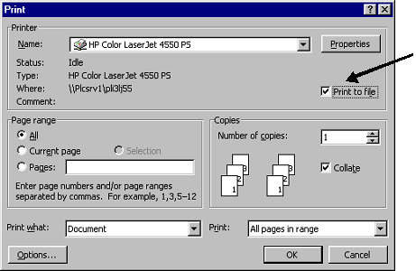

Creating the Overlays for Uploading into VSI-Fax
In order for VSI-Fax to be able to format a print file with the associated overlay it is necessary to create the overlay in a format which can be read by VSI-Fax and then upload this overlay into the VSI-Fax database.
You may need to create a VSI-Fax overlay that is slightly different from the original (printed) overlay; for example, if the document is printed on headed paper, you will need to include the details from the headed paper, such as the company logo, on the VSI-Fax overlay.
To create an overlay:
- Create a .prn file of your overlay from its original document (for example, MS Word). Firstly ensure in Windows you have the print driver for your laser printer setup; this should ideally be using a PCL5 emulation although you can get away with PCL4. (This should be your standard HP Printer Driver).
- Open the source document (for example, using Excel or Word), and choose "Print".
- In the print box, select the PCL printer.
- the Print to File box (shown below).

- Click OK.
- Save the file to a location you can access later.
- As the VSI-Fax Administrator user in UNIX, ftp this .prn file into the overlay directory of the appropriate environment (for example, $BASE/app/overlays/).
- When logged in to the host UNIX server as the VSI-Fax administrator, convert the .prn file to a TIFF file using a VSI-Fax standard command:
$pcltotif -E fine -o order.tif order.prn
The resulting TIFF file is in the appropriate format for uploading into VSI-Fax.
Next you need to upload the file, then create a .dat file to tell which TIFF file to use.